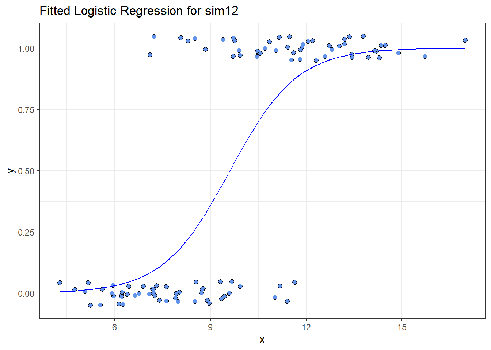

knitr::opts_chunk$set(comment = NA)
library(broom)
library(tidyverse)
theme_set(theme_bw())19 Logistic Regression: The Foundations
Sources for this material include Harrell (2001), Harrell (2018), Ramsey and Schafer (2002) (chapters 20-21), Vittinghoff et al. (2012) (chapter 5) and Faraway (2006) (chapter 2).
19.1 R Setup Used Here
19.2 A First Attempt: A Linear Probability Model
Suppose we want to predict a binary outcome which takes on the value 1 or 0, based on a single quantitative predictor. Let y be a 1/0 outcome, and x be a quantitative predictor in the following simulation.
set.seed(432)
sim12 <- tibble(x = rnorm(100, 10, 3),
err = rnorm(100, 0, 2),
y = ifelse(x + err > 10, 1, 0))
sim12 <- select(sim12, x, y)
ggplot(sim12, aes(x = x, y = y)) + geom_point()
Now, we want to use our variable x here to predict our variable y (which takes on the values 0 and 1).
One approach to doing this would be a linear probability model, as follows:
mod12a <- lm(y ~ x, data = sim12)
summary(mod12a)
Call:
lm(formula = y ~ x, data = sim12)
Residuals:
Min 1Q Median 3Q Max
-0.74104 -0.23411 -0.02894 0.23117 0.83153
Coefficients:
Estimate Std. Error t value Pr(>|t|)
(Intercept) -0.72761 0.12272 -5.929 4.57e-08 ***
x 0.12620 0.01219 10.349 < 2e-16 ***
---
Signif. codes: 0 '***' 0.001 '**' 0.01 '*' 0.05 '.' 0.1 ' ' 1
Residual standard error: 0.3491 on 98 degrees of freedom
Multiple R-squared: 0.5222, Adjusted R-squared: 0.5173
F-statistic: 107.1 on 1 and 98 DF, p-value: < 2.2e-16Here’s a picture of this model. What’s wrong here?
ggplot(sim12, aes(x = x, y = y)) +
geom_point() +
geom_smooth(method = "lm", formula = y ~ x, se = TRUE) +
labs(title = "Linear Probability Model")If y can only take the values 0 and 1 (or, more precisely, if we’re trying to predict the value \(\pi\) = Pr(y = 1)) then what do we do with the predictions that are outside the range of (0, 1)?
19.3 Logistic Regression
Logistic regression is the most common model used when the outcome is binary. Our response variable is assumed to take on two values, zero or one, and we then describe the probability of a “one” response, given a linear function of explanatory predictors. We use logistic regression rather than linear regression for predicting binary outcomes. Linear regression approaches to the problem of predicting probabilities are problematic for several reasons - not least of which being that they predict probabilities greater than one and less than zero. There are several available alternatives, including probit regression and binomial regression, for the problem of predicting a binary outcome.
Logistic regression is part of a class called generalized linear models which extend the linear regression model in a variety of ways. There are also several extensions to the logistic regression model, including multinomial logistic regression (which is used for nominal categorical outcomes with more than two levels) and ordered logistic regression (used for ordered multi-categorical outcomes.) The methods involved in binary logistic regression may also be extended to the case where the outcomes are proportions based on counts, often through grouped binary responses (the proportion of cells with chromosomal aberrations, or the proportion of subjects who develop a particular condition.)
Although the models are different in some crucial ways, the practical use of logistic regression tracks well with much of what we’ve learned about linear regression.
19.4 The Logistic Regression Model
A generalized linear model (or GLM) is a probability model in which the mean of an outcome is related to predictors through a regression equation. A link function g is used to relate the mean, \(\mu\), to a linear regression of the predictors \(X_1, X_2, ..., X_k\).
\[ g(\mu) = \beta_0 + \beta_1 X_1 + \beta_2 X_2 + ... + \beta_k X_k \]
In the case of a logistic regression model,
- the mean \(\mu\) of our 0/1 outcome is represented by \(\pi\) which describes the probability of a “1” outcome.
- the linking function we use in logistic regression makes use of the logit function, which is built on the natural logarithm.
19.5 The Link Function
Logistic regression is a non-linear regression approach, since the equation for the mean of the 0/1 Y values conditioned on the values of our predictors \(X_1, X_2, ..., X_k\) turns out to be non-linear in the \(\beta\) coefficients. Its nonlinearity, however, is solely found in its link function, hence the term generalized linear model.
The particular link function we use in logistic regression is called the logit link.
\[ logit(\pi) = log\left( \frac{\pi}{1 - \pi} \right) = \beta_0 + \beta_1 X_1 + \beta_2 X_2 + ... + \beta_k X_k \]
The inverse of the logit function is called the logistic function. If logit(\(\pi\)) = \(\eta\), then \(\pi = \frac{exp(\eta)}{1 + exp(\eta)}\)
The plot below displays the logistic function \(y = \frac{e^x}{1 + e^x}\)
set.seed(43201)
temp <- tibble(
x = runif(200, min = -6, max = 6),
y = exp(x) / (1 + exp(x)))
ggplot(temp, aes(x = x, y = y)) +
geom_line(linewidth = 2, col = "blue")As you can see in the figure above, the logistic function \(\frac{e^x}{1 + e^x}\) takes any value \(x\) in the real numbers and returns a value between 0 and 1.
19.6 The logit or log odds
We usually focus on the logit in statistical work, which is the inverse of the logistic function.
- If we have a probability \(\pi < 0.5\), then \(logit(\pi) < 0\).
- If our probability \(\pi > 0.5\), then \(logit(\pi) > 0\).
- Finally, if \(\pi = 0.5\), then \(logit(\pi) = 0\).
19.7 Interpreting the Coefficients of a Logistic Regression Model
The critical thing to remember in interpreting a logistic regression model is that the logit is the log odds function. Exponentiating the logit yields the odds.
So, suppose we have a yes/no outcome variable, where yes = 1, and no = 0, and \(\pi\) = Pr(y = 1). Our model holds that:
\[ logit(\pi) = log\left( \frac{\pi}{1 - \pi} \right) = \beta_0 + \beta_1 X_1 + \beta_2 X_2 + ... + \beta_k X_k \]
The odds of a yes response (the odds that Y = 1) at the level \(X_1, X_2, ..., X_k\) are:
\[ Odds(Y = 1) = exp(\beta_0 + \beta_1 X_1 + \beta_2 X_2 + ... + \beta_k X_k) \]
The probability of a yes response (Pr(y = 1), or \(\pi\)) is just
\[ \pi = Pr(Y = 1) = \frac{Odds(Y = 1)}{1 + Odds(Y = 1)} = \frac{exp(\beta_0 + \beta_1 X_1 + \beta_2 X_2 + ... + \beta_k X_k)}{1 + exp(\beta_0 + \beta_1 X_1 + \beta_2 X_2 + ... + \beta_k X_k)} \]
19.8 The Logistic Regression has non-constant variance
In ordinary least squares regression, the variance \(Var(Y | X_1, X_2, ..., X_k) = \sigma^2\) is a constant that does not depend on the predictor values. This is not the case in logistic regression. The mean and variance specifications of the logistic regression model are quite different.
\[ logit(\pi) = log\left( \frac{\pi}{1 - \pi} \right) = \beta_0 + \beta_1 X_1 + \beta_2 X_2 + ... + \beta_k X_k \\ \mu[Y | X_1, ..., X_k] = \pi, \\ Var[Y | X_1, ..., X_k] = \pi(1 - \pi) \]
The variance is now a function of the mean, and contains no additional parameter for us to estimate.
19.9 Fitting a Logistic Regression Model to our Simulated Data
Recall the sim12 data we built earlier.
ggplot(sim12, aes(x = x, y = y)) + geom_point()
Here is the fitted logistic regression model.
model12b <- glm(y ~ x, data = sim12, family = binomial)
model12b
Call: glm(formula = y ~ x, family = binomial, data = sim12)
Coefficients:
(Intercept) x
-9.1955 0.9566
Degrees of Freedom: 99 Total (i.e. Null); 98 Residual
Null Deviance: 138.6
Residual Deviance: 70.03 AIC: 74.03The logistic regression equation is:
\[ logit(Pr(y = 1)) = log\left( \frac{Pr(y = 1)}{1 - Pr(y = 1)} \right) = -9.1955 + 0.9566 x \]
We can exponentiate the results of this model to get to an equation about odds, and eventually, a prediction about probabilities. Suppose, for instance, that we are interested in the prediction when x = 12.
\[ logit(Pr(y = 1) | X = 12) = log\left( \frac{Pr(y = 1)}{1 - Pr(y = 1)} \right) = -9.1955 + 0.9566 * 12 = 2.2837 \]
And we can also get this from the predict function applied to our model, although the predict approach retains a few more decimal places internally:
predict(model12b, newdata = data.frame(x = 12)) 1
2.284069 \[ Odds(Y = 1 | X = 12) = exp(-9.20 + 0.96 * 12) = exp(2.2837) = 9.812921 \]
exp(predict(model12b, newdata = data.frame(x = 12))) 1
9.81654 The estimated probability of a yes response (Pr(y = 1), or \(\pi\)) if x = 12 is just
\[ \pi = Pr(Y = 1 | X = 12) = \frac{Odds(Y = 1 | X = 12)}{1 + Odds(Y = 1 | X = 12)} = \frac{exp(-9.20 + 0.96 x)}{1 + exp(-9.20 + 0.96 x)} = \frac{9.812921}{1 + 9.812921} = 0.908 \]
Does this work out?
exp(predict(model12b, newdata = data.frame(x = 12))) /
(1 + exp(predict(model12b, newdata = data.frame(x = 12)))) 1
0.907549 which is also directly available by running predict with type = "response".
predict(model12b, newdata = data.frame(x = 12), type = "response") 1
0.907549 19.10 Plotting the Logistic Regression Model
We can use the augment function from the broom package to get our fitted probabilities included in the data.
m12b_aug <- augment(model12b, sim12, type.predict = "response")
ggplot(m12b_aug, aes(x = x, y = y)) +
geom_point() +
geom_line(aes(x = x, y = .fitted), col = "blue") +
labs(title = "Fitted Logistic Regression Model for sim12")
I’ll add a little jitter on the vertical scale to the points, so we can avoid overlap, and also make the points a little bigger.
ggplot(m12b_aug, aes(x = x, y = y)) +
geom_jitter(height = 0.05, size = 2, pch = 21,
fill = "cornflowerblue") +
geom_line(aes(x = x, y = .fitted), col = "blue") +
labs(title = "Fitted Logistic Regression for sim12") +
theme_bw()
All right, it’s time to move on to fitting models. We’ll do that next.